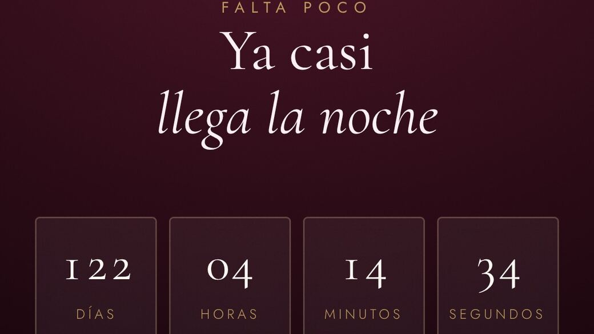
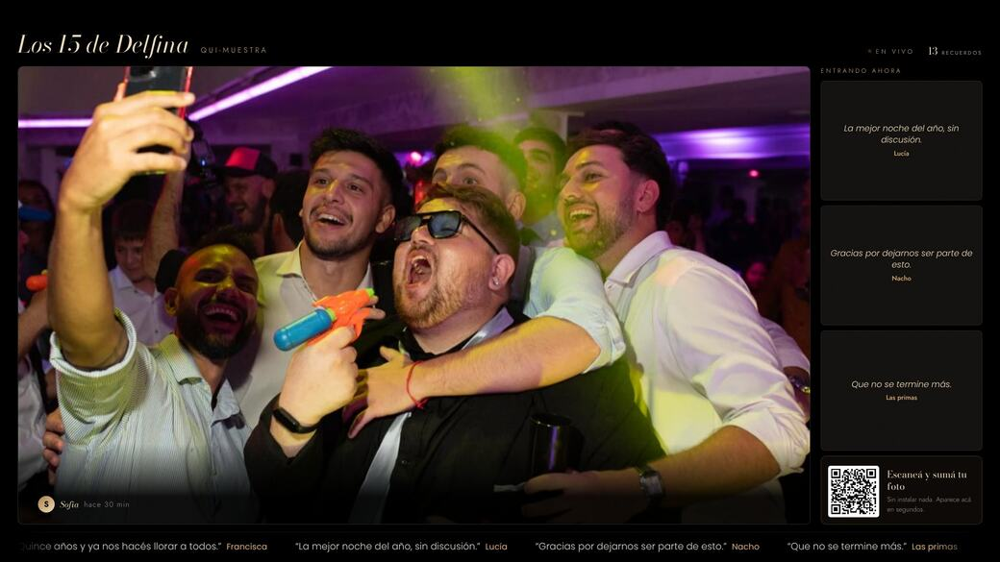
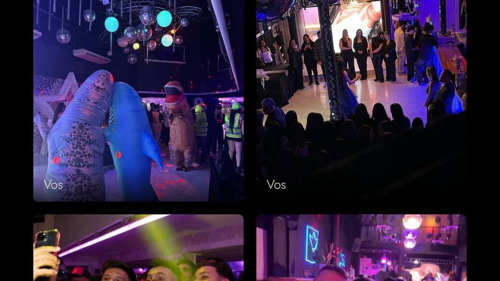

Tu evento merecealgo más que un flyer
Invitaciones que se abren como un sobre y te confirman quién viene. Y las experiencias que hacen que la fiesta se recuerde. Desde Rosario, para todo el país.
Esto es lo que hacemos
No te lo contamos.Miralo funcionando.
No son capturas: la pantalla del salón, el álbum del rollo y una invitación, corriendo ahora mismo con una fiesta inventada. Tocá cualquiera y lo probás entero.
Lo que hacemos
Todo lo digital de tu fiesta,en un solo lugar
De la invitación al recuerdo. Cada una va sola o las tres juntas.

Invitaciones digitales
Una web propia para tu evento. Se abre como un sobre y confirma quién viene.
Ver la pruebaAndando ahora mismo
Esta es la invitación de Pía,abierta en vivo
No es una captura: es la misma web que recibieron sus invitados, corriendo acá adentro.
- Se abre como un sobre, con un gesto.
- La cuenta regresiva corre sola.
- Confirman del celular y ves la lista.
- El alias para regalos se copia de un toque.

Muro de fotos en vivo
Sacan la foto y aparece proyectada al instante en el salón.
Ver la pruebaAndando ahora mismo
Esto es lo que se proyectaen el salón
La pantalla va sola toda la noche. Lo que manda un invitado desde su celular aparece ahí en segundos.
- Escanean el código de la mesa. Sin instalar nada.
- Nada se proyecta sin tu visto bueno.
- Se actualiza sola: nadie toca la computadora.
- Al otro día te llevás el álbum completo.

Rollo eterno
La cámara descartable, digital. Nadie ve nada hasta el revelado.
Ver la pruebaAndando ahora mismo
El álbum del rollo,recién revelado
Así lo abre cada invitado al otro día. Antes de la hora que elijas, esta pantalla no existe para nadie.
- Fotos contadas, como una cámara descartable.
- Cinco filtros, elegidos antes de disparar.
- Nadie las ve hasta el revelado. Ni nosotros.
- Te llevás todas las fotos, con cada nombre.
Invitaciones digitales
No es una imagen.Es una web para tu fiesta.
Un link por WhatsApp que se abre en el celular de cada invitado. Con el mapa, el dress code y todo lo que te van a preguntar.
Se abre con un gesto.
Los días que faltan, corriendo.
Confirman del celular y ves la lista.
Piden la canción que no puede faltar.
Se toca y se copia solo.
Para tu fiesta, no de una lista.
Muro de fotos en vivo
Las fotos de tus invitados,en la pantalla del salón
Escanean el código de la mesa y la foto aparece proyectada antes de que guarden el celular.
El código en las mesas
Lo escanean con la cámara. Sin instalar nada, sin cuenta.
Suben fotos y saludos
Fotos, videos, dedicatorias y audios, desde su teléfono.
Se proyecta y queda
La pantalla se actualiza sola, y al otro día es un álbum.
Listo para imprimir.
Nada se proyecta sin tu visto.
Código, tablero y muro completo.
Todo en un archivo, al otro día.
Rollo eterno
La cámara descartable,versión digital
Nadie ve nada hasta el revelado, ni el que la sacó. A la hora que elijas de esa noche, o al otro día, se abre para todos.
Vos elegís cuántas tiene cada uno.
Se eligen antes de disparar, no después.
Ni nosotros: el servidor se niega a entregarlas.
Las fotos completas, con cada nombre.
Trabajos
Tocá un celulary probala de verdad
Invitaciones reales, las mismas que recibieron los invitados. Confirmá, mirá la cuenta regresiva, tocá el alias.
Deslizá para ver las tres. Tocá cualquiera para abrirla y probarla
Los tres juntos
La fiesta entera,de la invitación al recuerdo
Un solo presupuesto, un solo interlocutor, y las tres piezas con la identidad de tu fiesta.
Se abre como un sobre y confirma asistencia.
Las fotos de todos, proyectadas en el salón.
Las fotos que nadie vio, reveladas al otro día.
Ya contrataste
Entrá a tu evento
Armás la fiesta y la manejás desde tu celular. Para crearla necesitás el código de activación que te damos al contratar.
Crear el evento, el QR de las mesas, moderar y bajar el álbum.
Entrar al panel → Rollo eternoCrear el rollo, cuántas fotos tiene cada uno y a qué hora se revela.
Entrar al rollo →¿Te pasamos el evento ya armado? Entrá con tu código del muro o tu código del rollo. ¿Todavía no contrataste? Escribinos.
La fiesta dura una noche. La invitación queda guardada para siempre.
Preguntas
Lo que preguntan todos
¿Cómo se la mando a mis invitados?
¿Cuánto tarda en estar lista?
¿Puedo cambiar algo después de que esté hecha?
¿Cómo veo quién confirmó?
¿El diseño es uno de plantilla?
¿Trabajan solo en Rosario?
¿Cuánto sale?
Escribinos
Contanos de tu fiesta
Decinos la fecha, el tipo de evento y qué te interesa. Te respondemos el mismo día con la propuesta y el precio.
Escribinos por WhatsApp